Feedback went unseen
Comments had no mentions or notifications.
Gridly · Product design case study
Issue tracking for localization quality assurance in Gridly.

01 / Product problem
As projects added languages and roles, teams used comments to report issues and coordinate fixes.
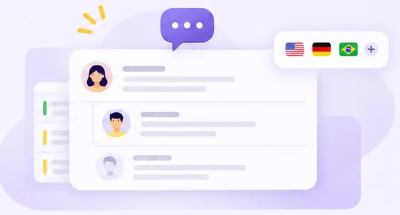
Comments had no mentions or notifications.
Teams could neither assign an issue nor mark it resolved.
Project managers had no list of open issues to filter.
02 / User research
I interviewed LQA linguists and translators, then mapped how they handed off a fix.
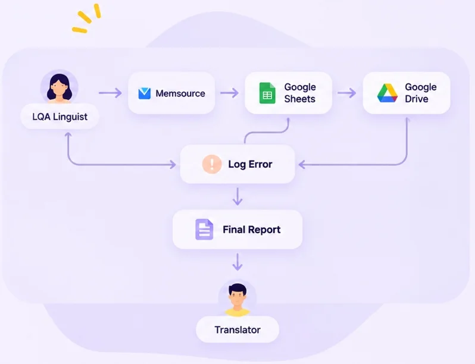
03 / MVP scope
I prioritized the actions reviewers needed to report an issue from a translated string.
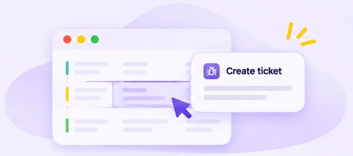
04 / Migration strategy
We migrated existing comments to Basic Tickets, keeping the thread, author, timestamp and link to the original cell.
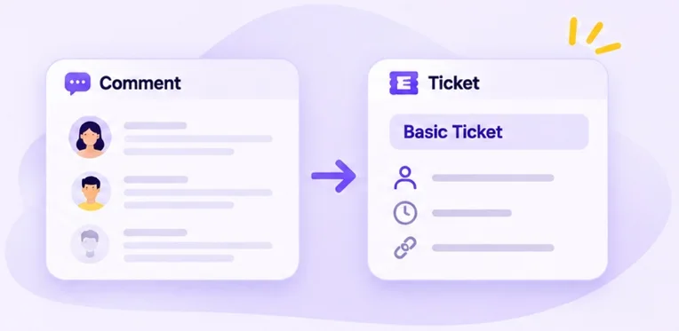
Teams could continue existing threads and use the same workflow for new everyday feedback.
Reviewers could classify formal language QA issues by category and severity using a predefined LQA model.
05 / Create a ticket
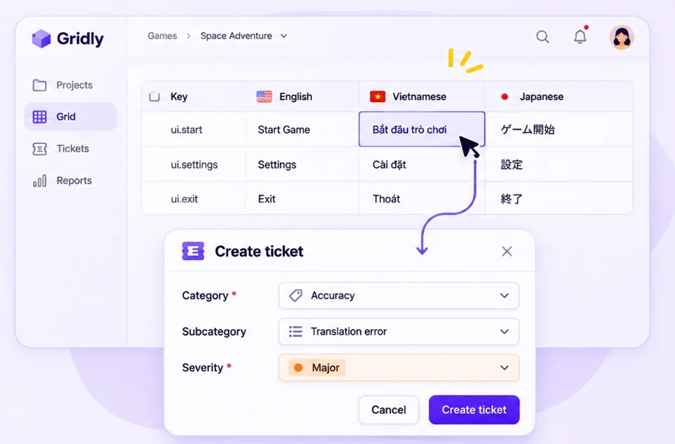
06 / Ticket detail
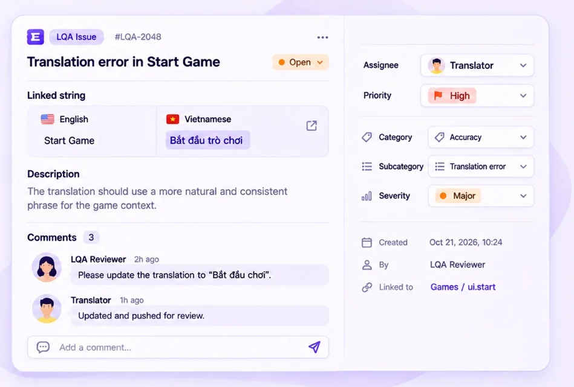
07 / Customer outcome
Rovio · Customer story
Rovio combined automated screenshots with its LQA workflow in Gridly.
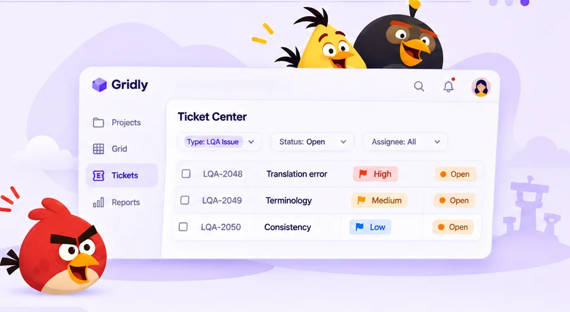
Strings reviewed per test
Reviewers could turn issues found in context into assigned work and track fixes in the same workspace.
08 / Project visibility
Ticket Center brings Basic Tickets and LQA issues into a project-wide view.
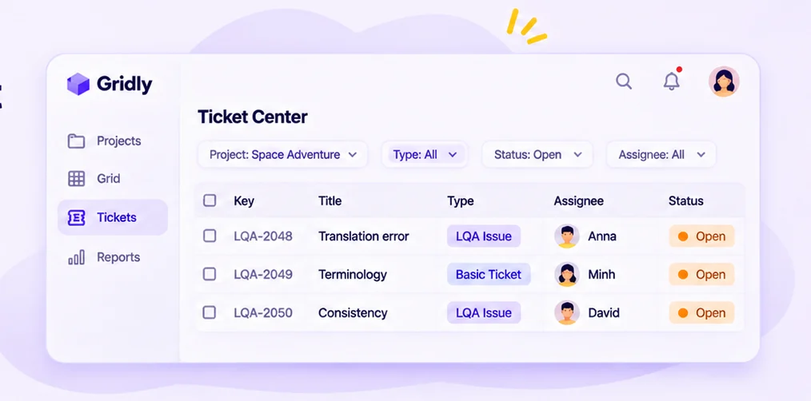
Separate open issues from resolved work.
Focus on formal LQA issues or everyday feedback.
Find work by owner and follow up on outstanding fixes.
09 / Key takeaways
Turning scattered comments into structured tickets helped teams review, assign and resolve localization issues at scale.
Start from real handoffs and remove friction for the people doing the work.
Launch the core workflow, then expand to support advanced LQA needs.
Give teams one place to track ownership and progress.
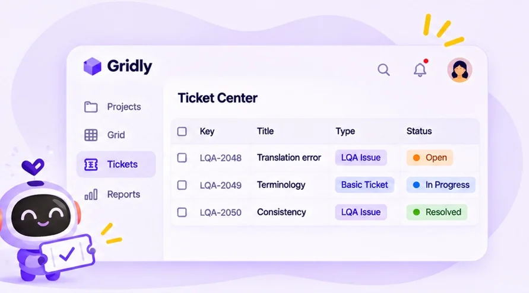
10 / Post-launch learnings
Real usage and feedback shaped the next set of improvements.
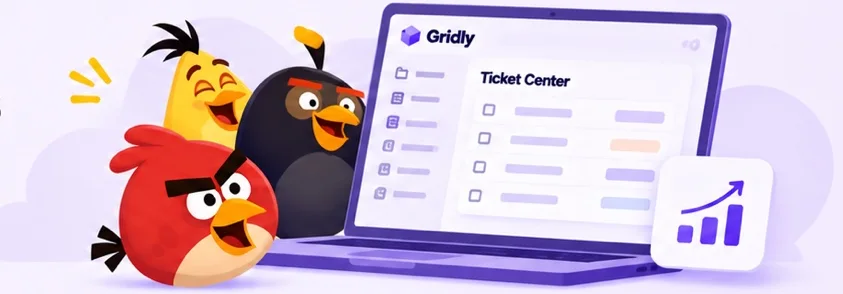
Adapt issue types, categories and severity to each customer’s workflow.
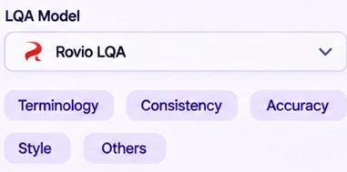
Add screenshots, references or context to speed up reviews.
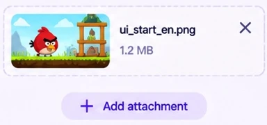
Tailor the ticket view by role and project needs.
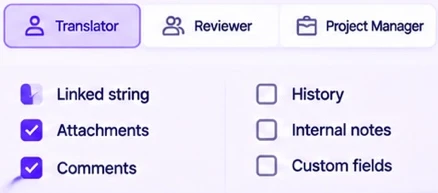